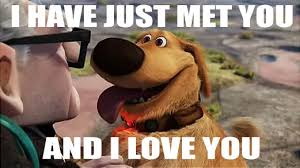
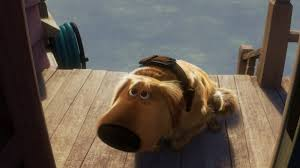

Dug is an obese golden retriever who belongs to Charles Muntz.
He is a fun-loving dog who speaks English via a special collar that translates his thoughts into speech, invented by his former master, Charles Muntz. Early in the film, Dug, one of Alpha's canine minions, is searching for a large bird that Muntz has been trying to capture for decades. He runs into Carl Fredricksen, Russell, and Kevin (the bird he is searching for). However, immediately after meeting Carl, Dug begins to idolize him and sees him as his master. He winds up switching sides, assisting Carl, Russell and Kevin.

He is every ounce a puppy in behavior and quickly becomes attached to Carl, who is at first hesitant to accept Dug. When he does, Dug expresses his joy in a manner that leaves no doubt that he prefers his new master.

He hates squirrles.